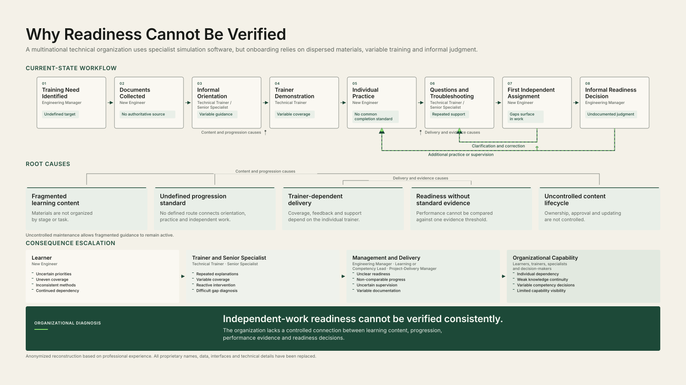

System deliverable
Business Problem Map
What prevents consistent progression and readiness verification?
Diagnoses fragmented learning, trainer dependency, inconsistent handoffs and the absence of a reliable independent-work readiness decision.